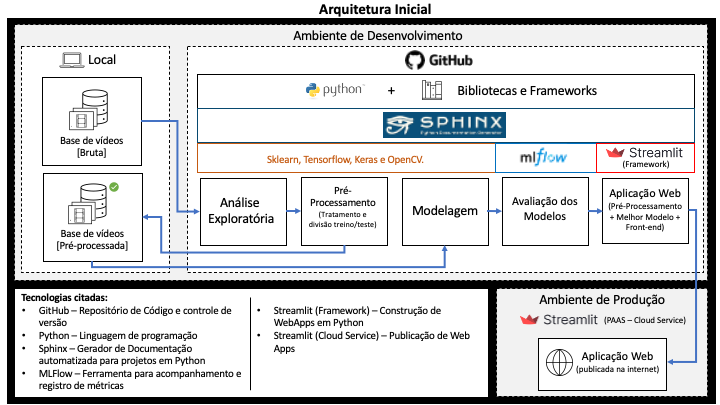
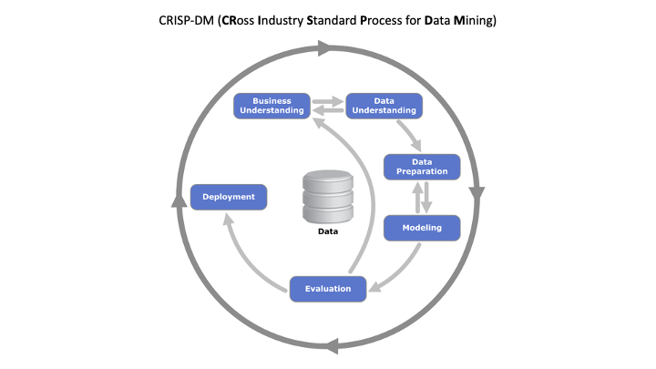

Introdução ao Projeto#
Objetivo:#
O projeto tem por objetivo gerar uma solução de Machine Learning capaz de ajudar plataformas e usuários a classificar conteúdos em vídeos em relação a presença ou não de “deepfakes”. De forma a acelerar o processo de sinalização e remoção de conteúdo potencialmente falso.
Para se atingir o nosso objetivo final, o desenvolvimento seguiu as seguintes etapas:
Teste de 3 diferentes modelos para detecção de deepfakes;
Refinar modelos se aplicável (ajuste de hiperparametros, treino com mais dados, ajuste de camadas e etc…)
Criação de um modelo combinado (ensemble) visando obter melhores resultados.
Gerar um benchmarking dos modelos;
O melhor modelo será implantado na nossa solução.
Links do projeto:#
Arquitetura:#

Metodologias#
- Design Thinking#
O Design Thinking visa explorar estratégias criativas para identificaçãode problemas/desafios e proposição de soluções, sustentadas por hipóteses que são rapidamente testadas e validadas com os clientes reais. Combinado com a metodologia startup enxuta, do inglês lean startup, e as metodologias ágeis Permite sermos capazes de testar rapidamente os problemas, soluções, segmentos de clientes, entre outros pontos essenciais para validar e operacionalizar qualquer ideia.
Essa metodologia será utilizada para a concepção do produto e sua aplicação estará registrada no relatório final do projeto aplicado.
- CRISP-DM#
O CRISP-DM (Cross Industry Standard Process for Data Mining ou processo padrão da indústria cruzada para mineração de dados) é um método ágil focado na resolução de problemas.
Atualmente é uma das metodologias mais utilizadas no desenvolvimento de projetos em ciência de dados. Sendo de grande utilidade em cenários de incerteza na hora de resolver problemas de negócio. Em outras palavras, uma etapa só é iniciada quando a anterior foi submetida a um processo de validação, o que implica em mudanças ao longo do tempo.
Portanto, o CRISP DM é uma metodologia flexível, capaz de lidar com problemas complexos envolvendo uma grande quantidade de dados.

Etapas do CRISP-DM no projeto aplicado:
Entender o Negócio: Foca na compreensão do objetivo do projeto a partir de uma perspectiva de negócios, definindo um plano preliminar e uma estrutura de desenvolvimento.
Entender os Dados: Coleta de dados e inicio de atividades para familiarização com os dados, identificando problemas ou conjuntos interessantes.
Preparação dos Dados: Construção do conjunto de dados final a partir dos dados iniciais.
Modelagem: Aplicação de técnicas de otimização, seleção de variavéis e modelagem.
Avaliação: Verificação das principais métricas visando entender se o modelo atinge os objetivos do negócio.
Implantação: Os resultados obtidos a partir do modelo são disponibilizads de uma forma que os clientes possam consumir.
Padronização:#
Para padronizar a estrutura de arquivos do projeto, foi utilizado o Cookiecutter. Trata-se de um repositório Open Source com templates de diferentes tipos. Cada template possui pastas e arquivos normalmente utilizados em seu respectivo tipo de projeto/tecnologia.
Nosso projeto utiliza o Cookiecutter de Data Science da Driven Data.
Referências:
Organização do projeto:
├── LICENSE
├── Makefile <- Makefile with commands like `make data` or `make train`
├── README.md <- The top-level README for developers using this project.
├── data <- Diretório de dados.
│ ├── external <- Diretório de dados externos(temporário).
│ │ └── input_video <- Diretório para armazenar o vídeo recebido via
│ │ upload para classificação.
│ │
│ ├── interim <- Diretório de dados em processamento (temporário).
│ │ └── faces <- Diretório para armazenar os frames processados
│ │ do vídeo recebido via upload para classificação.
│ │
│ ├── processed <- Diretório de dados processados.
│ │ ├── dataset_celebdf <- Diretório de faces do dataset celebdf
│ │ │ └── real_face <- Diretório de faces reais
│ │ │ └── fake_face <- Diretório de faces falsas
│ │ │
│ │ ├── dataset_faceforensics <- Diretório de faces do dataset faceforensics
│ │ │ └── real_face <- Diretório de faces reais
│ │ │ └── fake_face <- Diretório de faces falsas
│ │ │
│ │ └── dataset_dfdc <- Diretório de faces do dataset dfdc
│ │ └── real_face <- Diretório de faces reais
│ │ └── fake_face <- Diretório de faces falsas
│ │
│ └── raw <- Diretório de dados brutos.
│ ├── dataset_celebdf <- Diretório de vídeos do dataset celebdf
│ │ └── real_video <- Diretório de vídeos reais
│ │ └── fake_video <- Diretório de vídeos falsos
│ │
│ ├── dataset_faceforensics <- Diretório de vídeos do dataset faceforensics
│ │ └── real_video <- Diretório de vídeos reais
│ │ └── fake_video <- Diretório de vídeos falsos
│ │
│ └── dataset_dfdc <- Diretório de vídeos do dataset dfdc
│ └── real_video <- Diretório de vídeos reais
│ └── fake_video <- Diretório de vídeos falsos
│
├── docs <- A default Sphinx project; see sphinx-doc.org for details
│
├── models <- Trained and serialized models, model predictions, or model summaries
│
├── notebooks <- Jupyter notebooks. Naming convention is a number (for ordering),
│ the creator's initials, and a short `-` delimited description, e.g.
│ `1.0-jqp-initial-data-exploration`.
│
├── references <- Data dictionaries, manuals, and all other explanatory materials.
│
├── reports <- Generated analysis as HTML, PDF, LaTeX, etc.
│ └── figures <- Generated graphics and figures to be used in reporting
│
├── requirements.txt <- The requirements file for reproducing the analysis environment, e.g.
│ generated with `pip freeze > requirements.txt`
│
├── setup.py <- makes project pip installable (pip install -e .) so src can be imported
├── src <- Source code for use in this project.
│ ├── __init__.py <- Makes src a Python module
│ │
│ ├── data <- Scripts to download or generate data
│ │ └── make_dataset.py
│ │
│ ├── features <- Scripts to turn raw data into features for modeling
│ │ └── build_features.py
│ │
│ ├── models <- Scripts to train models and then use trained models to make
│ │ │ predictions
│ │ ├── predict_model.py
│ │ └── train_model.py
│ │
│ └── visualization <- Scripts to create exploratory and results oriented visualizations
│ └── visualize.py
│
└── tox.ini <- tox file with settings for running tox; see tox.readthedocs.io
A solução#
Cmbinamos os 2 melhores modelos dos nossos teste. Dessa forma o nosso “Ensemble” contará com o modelo Mesonet e o melhor modelo de decomposição de espectro. A combinação foi feita através de uma função que roda os dois modelos, captura as predições e calcula aplicando como peso a média das acurácias que obtivemos nos testes anteriores. Esse cálculo é aplicado para cada predição (face extraída do vídeo), e o resultado final é a média.
O modelo pode ser utilizado através de uma aplicação Web. Nela o usuário pode fazer um upload de um vídeo, A aplicação irá extrair frames com a face, realizar e exibir a análise individual dos frames e também uma análise consolidada.
Além disso, também é exibido o percentual da probabilidade de ser real e de ser um deepfake.